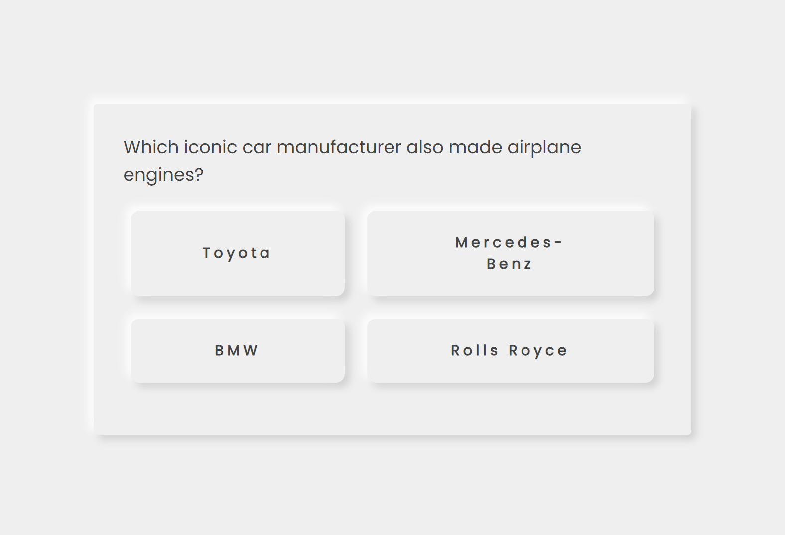
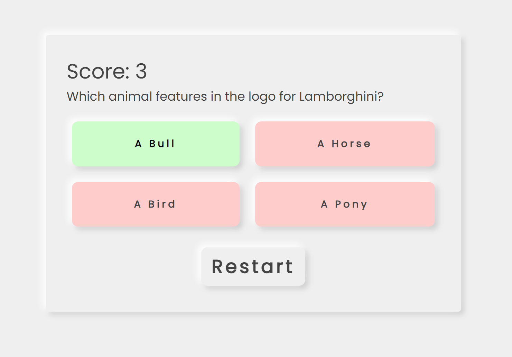
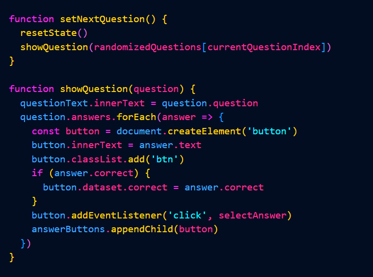

<!DOCTYPE html>
<html lang="en">

<head>
  <link rel="icon" href="images/UI/Logo.ico" />

  <link rel="stylesheet" type="text/css" href="css/style.css" />

  <script defer src="scripts/script.js"></script>

  <title>Ivan Mitsov Portfolio</title>

  <meta name="viewport" />
</head>

</html>

<header class="navbar">
  <a href="index.html">
    
  </a>
  <nav class="list" id="navigation">
    <ul>
      <li><a href="index.html#about">About</a></li>
      <li><a href="index.html#casino">Unreal Engine</a></li>
      <li><a href="index.html#car">Car Simulation</a></li>
      <li><a href="index.html#thechair">The Chair</a></li>
      <li><a href="index.html#2dplatformer"> 2D Platformer</a></li>
      <li><a href="index.html#produceabuse">C++ RPG</a></li>
      <li><a href="index.html#bleached">Bleached | Roguelike</a></li>
      <li><a href="index.html#plasticTide">Plastic Tide | Boat Game</a></li>
      <li><a href="index.html#shaders">Shaders</a></li>
      <li><a href="index.html#ragdolls">Active Ragdolls</a></li>
      <li><a href="index.html#games">Other Games</a></li>
      <li><a href="IMTS.html">IMT&S Blog</a></li>
    </ul>
  </nav>
  
</header>

<body>
  <div id="blob"></div>
  <div id="blur"></div>

  <div id="fullImgBox" onclick="closeImg()">
    
    <span onclick="closeImg()">X</span>
  </div>

  <aside class="social">
    <h6 hidden>Social Icons</h6>
    <nav>
      <ul>
        <li>
          <a target="_blank" href="https://github.com/vandim199"></a>
        </li>
        <li>
          <a target="_blank" href="https://twitter.com/Vandim199"></a>
        </li>
        <li>
          <a target="_blank" href="https://www.linkedin.com/in/ivan-mitsov-b3a715201/"></a>
        </li>
      </ul>
    </nav>
  </aside>
  <main>
    <section class="imageGalleries" id="chair">
      <h2>The Chair</h2>
      <br />
      <li class="video">
        <figure>
          <video width="200" height="150" controls>
            <source src="images/Gallery/videos/Trailer_TheChair.mp4" type="video/mp4">
            Your browser does not support the video tag.
          </video>
        </figure>
      </li>
      <p>
        Our team was assigned to create a seated VR experience which would evoke a strong sensation in the user and
        should
        be accessible to a wide demographic of people of all ages, who don't have any previous experience with virtual
        reality. Unreal Engine was the preferred engine for this task because of its impressive graphics capabilities
        and
        we weren't limited by hardware capabilities, because the software would be running on a high-end machine. The
        client expressed his preference to exclude the need for controllers or other input devices that could confuse a
        user unfamiliar with such devices. Another requirement was to avoid simulated situations that might cause users
        suffering from motion sickness to get nauseous, so cars, boats and rollercoasters were out of the question. With
        these requirements in mind, we came up with a variety of concepts, some of which I suggested. In my mind I
        thought
        that even though the users might not have experience with VR or controllers, they could still just hold the
        controller and interact with the environment by waving or pointing, without the involvement of pressing buttons.
        One of the ideas involved using the controller as a flashlight/laser pointer to point towards objects to
        interact
        with them in a horror setting - for example to point at the monster to scare it away. Another suggestion was to
        make a magic school like in Harry Potter and have the user be a student in a classroom and learn new spells. On
        the blackboard a shape would be shown and the user would use the controller as a wand to draw the shape in the
        air
        in order to cast the spell. Before suggesting the idea I first had to know if it's doable so I began research on
        shape/gesture/line recognition algorithms.
        <a href="https://www.youtube.com/watch?v=WBpjcCoU0gs">Example</a> <br>
        After finding a suitable algorithm I suggested the idea to my team and it was well received and we presented it
        to
        the client on our next meeting. Unfortunately all of the ideas which involved interaction or player input were
        not
        accepted so in the end we proceeded with another teammate's idea to make a horror experience where you are
        sitting
        at home and a mutated creature tries to get inside the house to eat you.

        <br />
        <b>Version Control</b> - because of the high file size of the assets my preferred source control
        tool - GitHub would not be suitable. After researching our options, I decided to host the repository on the XR
        Lab
        computer using VisualSVN to easily create the server and all the clients are connected via TortoiseSVN. But
        there
        was a problem with hosting the repository myself. I didn't have access to open port forwarding to make it
        available to networks outside of the university in cases someone wants to work from home. I almost gave up using
        this solution but I fixed the problem the same way I did 10 years ago when I wanted to host a Minecraft server,
        but instead of Hamachi, I used RadminVPN which is also a virtual private network application, but it doesn't
        require registering with an account. This allowed everyone to connect to the computer using the private network
        IP
        and thus bypassing the need to forward ports. Unreal Engine has a useful feature to directly connect to a
        repository from the editor and automatically synchronizes the changes on startup and allows the artists to
        submit
        their edits easily. It also shows if someone is currently working on a file to avoid overwriting progress. When
        this was all set up I helped everyone install the apps and connect.<br />
        <br />
        To achieve high quality graphics I used the new (at the time) Unreal Engine 5.3 version which had greatly
        improved
        the performance of Lumen Ray Tracing in VR. It was hard to make that decision since the Meta Quest XR plugin
        still
        wasn't updated to work with UE 5.3. The performance was significantly worse in 5.2 so we couldn't risk working
        in
        that version temporarily hoping that the plugin would be updated in time. This meant that we could not use the
        hand tracking feature to add some interaction without controllers. I tried to rewrite the parts of the plugin
        that
        gave me errors in C++ but I couldn't make it work, since there were too many changes in the way XR controllers
        work between version 5.2 and 5.3. A couple of months later the plugin got updated but none of us could come up
        with ideas to implement the user's hands into the project concept so far into the project.<br>
        <br>
        I created the project using the VR Template and blocked out a simple indoor scene, enabled Lumen and edited the
        post processing settings to setup the horror vibe. I ran some tests and determined what filters we should avoid
        -
        depth of field decreased the performance significantly. For this scene I made a shader for the TV to have
        visible
        pixels when you get close enough. <br />
      </p>
      <ul>
        <li>
          <figure>
            
          </figure>
        </li>
        <li>
          <figure>
            
          </figure>
        </li>
      </ul>
      <p>
        Since the experience will be like a cutscene we made everything on a Sequencer Timeline. I wrote some blueprints
        to add functions for the artists like playing sound clips, make lights flicker, etc.<br>
        <br>
        A problem we noticed while testing is that users often didn't see some of the animations of the monster moving
        past the windows because they were looking in another direction. To fix that I wrote a script to pause the
        timeline until the player looks in the specified direction by comparing checking the Dot product of the VR
        headset
        forward vector and the location of the monster. I made it easy to drag and drop and without the need to write
        any
        code apart from changing the variables - desired direction, cone threshold and the option to resume after a few
        seconds even if the user still hasn't looked. I also mapped the controller buttons and some of the keyboard keys
        to start, reset and re-center the view. After a user has put on the headset we can easily restart with the
        keyboard or wirelessly with the controller.

      </p>
      <ul>
        <li>
          
        </li>
      </ul>
      <p>
        My involvement with the project also included helping my teammates a lot. This involves being available for
        problem solving. When an error occurred, I was always there to fix it. I helped everyone import their assets.
      </p>
      <h2>Cost Calculation</h2>
      <p>
        The average junior game programmer's yearly salary for full-time in The Netherlands is 54 456€ so based on that
        we
        can calculate that the hourly rate is 28.36€. Considering that the work that I did for the project took 2
        full-time months, but I needed to be available for technical problems throughout the period of the project I
        would
        estimate my services would cost around 11000€ or 9000€ if it were only for the 2 months.
      </p>
      <h2>Personal Learning Goals</h2>
      <p>
        One of my initial learning goals for IMT&S that I chose was to learn back-end development. To my understanding
        at
        the time this skill would be useful in the development of online multiplayer games, since they use player
        accounts
        that are stored in a database as well as all of the user's information. After doing a lot more research I
        decided
        that I want to change my learning goal to also include front-end development as well. The combination of the two
        is called full-stack and it's an invaluable skill to have as a programmer, especially from my experience of
        searching for internships as a game programmer and most of the positions I encountered were for web developers
        so
        getting some experience with that can provide me alternatives in the future if I find myself not being able to
        get
        a job in the game industry.
        <br><br>
        When making my learning goals I was planning to use this knowledge to help out my studio by making a scoreboard
        that they wanted to add to the Podtherapy project, but a person from another studio switched to ours and since
        they had previous experience with databases and servers, which were needed for this kind of task, the team
        didn't
        need any of my help so I couldn't tie my learning goals with the any of the IMT&S projects. I didn't have a
        choice
        apart from working on my own towards my goal, incorporating a project-based learning. This is also one of the
        reasons I ended up including front-end in my goals - because the game would have served as the front-end, which
        would make RESTful API calls to the database server that would return the list of users and their scores.
        <br><br>
        All of my knowledge of web development stemmed from the Web Basics course in year 2 for engineers and designers,
        but it only included HTML and CSS. This meant that before I can start, I needed to learn a new programming
        language - JavaScript, because most of the tools, libraries and frameworks are written with JavaScript in mind.
        To
        learn more I first made some simple functions in my portfolio site, which I had made during the Web Basics
        course.
        I added some basic features like a hamburger menu, images that can be clicked to view them in full-screen, and
        updated the visuals while at it. For the visuals it was mostly redesigning through CSS, but I also made a
        colored
        blob that follows the cursor through a function.
        <br>
      </p>
      <ul>
        <li>
        <li class="video">
          <figure>
            <figcaption>Old UI</figcaption>
            <video width="200" height="150" controls>
              <source src="images/Gallery/videos/oldWebsite.mp4" type="video/mp4">
              Your browser does not support the video tag.
            </video>
          </figure>
          <figure>
            <figcaption>New UI</figcaption>
            <video width="200" height="150" controls>
              <source src="images/Gallery/videos/newWebsite.mp4" type="video/mp4">
              Your browser does not support the video tag.
            </video>
          </figure>
        </li>
        </li>
      </ul>
      <p>
        Afterwards I looked up some inspiration for beginner projects.
        First idea was a quiz website like Kahoot. I followed a <a
          href="https://youtu.be/riDzcEQbX6k?si=jM8pwAb9ox9_92oA">video tutorial</a> to write the JavaScript of the
        project and modified accordingly. You can check it out <a target="_blank"
          href="./carhoot-main/index.html">Here</a></p>
      <ul>
        <li>
          
        </li>
        <li>
          
        </li>
        <li>
          
        </li>
      </ul>
      <br><br>
      <p>Another of the projects was a website that can show you random movies by getting them from a database like IMDB
        and parsing the variables - cover image, title, release date, actors, etc. It would be a nice exercise because
        it
        involves a database - just like full-stack apps. I used The Movie DB's API to get all of the aforementioned
        information and then I use JavaScript to create a new elements and attach them to the existing HTML document and
        set their properties. Learning the basics and making small practice projects took more than a month and a half.
      </p>
      <ul>
        <li>
          
        </li>
        <li>
          
        </li>
        <li>
          
        </li>
        <li>
          
        </li>
      </ul>
      <p>
        After that, I began research on what modern websites most commonly use, and my findings pointed to the MERN tech
        stack (Thomas, 2024). MERN stands for MongoDB, Express, React and Node.js. It is most commonly used to make single-page web
        apps. With that in mind I came up with a project idea to develop to learn everything needed. The project I
        decided upon was a single-page album website that functions similarly to most e-commerce websites. What I mean
        by that is that the website would contain a collection of memorable images, videos and quotes from me and my
        friends and the user would be able to apply search filters based on media type and people included.<br><br>

        The MERN stack perfectly fits my needs, but I decided to replace MongoDB with a self-hosted MySQL database. The
        database will be stored on a Linux machine and it will contain a hard drive with the images and videos along
        with their metadata, which in my case is Date of Upload, People involved, Media Type and file path to the file
        in the hard drive. Also on that Linux machine, the Node.js will be run. It is a server which handles requests
        from the client and serves them to correct information. The server also uses the Express framework for easier
        implementation. The way this all works is that when the server is hosted, when a browser enters the IP or URL it
        will run a function written in JavaScript and it will send back the base HTML file that the user is meant to
        see. Then it makes an API request to the MySQL database to get the first page of media items and send them to
        the browser. Then for each media item React's Virtual Document adds the new items in new web elements without
        the need for reloading. Another reason to use this over any simpler methods is that when the user reaches the
        bottom of the page Node.js can make another request to load more items, thus allowing for an infinitely
        scrolling website, which also improves load times. Another feature is that users can apply filters and it will
        search the database for items that meet the filters. Using a password my friends would also be able to upload
        content on the website and tag it accordingly all through the website. With this plan in mind, I started
        watching video tutorials to familiarize myself with the tools. After a bit of time, I successfully set up the
        database and added my first test items. Next was the server - at first all it could do is send an HTML file with
        a “Hello World” written on it. I installed the React library with Vite, which packages all of the files (HTML,
        CSS, JavaScript and React jsx) to reduce traffic and improve speeds. I created a simple UI for the moment and
        made the element which would contain media items. Here it is with manually added elements:
      </p>
      <ul>
        <li>
          
        </li>
        <li>
          
        </li>
        <li>
          
        </li>
        <li>
          
        </li>
      </ul>
      <br><br>
      <p>When the page is opened, it triggers a function on the server that makes a query to the database and sends the
        information back to the client and parses them into an array, which creates a MediaContainer element for each of
        the received items. This whole process happens asynchronously because it takes a moment for the API to respond
        and this ensures that the website isn't frozen while loading or that the page isn't getting completely
        refreshed. When the array is updated it soft-refreshes the affected elements, without losing input data, scroll
        position or other properties which is very important for user experience. Here is a video of it getting a random
        image:
      </p>
      <ul>
        <li class="video">
          <figure>
            <video width="200" height="150" controls>
              <source src="images/Gallery/videos/FriendAlbumRandomAPI.mp4" type="video/mp4">
              Your browser does not support the video tag.
            </video>
          </figure>
        </li>
        <li>
          
        </li>
      </ul>
      <br><br>
      <p>After that I created filtering buttons to filter through the results, by querying the parameters to the
        database
        and repeats the above process.
      </p>
      <ul>
        <li class="video">
          <figure>
            <video width="200" height="150" controls>
              <source src="images/Gallery/videos/FriendAlbumFiltering.mp4" type="video/mp4">
              Your browser does not support the video tag.
            </video>
          </figure>
        </li>
        <li>
          
        </li>
      </ul>
      <br><br>
      <p>This personal project took the remaining 1.5 months to make, but unfortunately I ran out of time so I couldn't
        complete everything I wanted to add. But I plan on finishing it up in the future by improving the UI and adding
        uploading directly from the site, because the way I do it now is by adding the image to the folder and manually
        inserting a new entry into the database.
      </p>
      <h2>Sources</h2>
      <p>CyberWolves. (2022, June 20). Implement search, sort, filter and pagination REST API with Node JS | Express |
        MongoDB [Video]. YouTube. <a target="_blank"
          href="https://www.youtube.com/watch?v=0T4GsMYnVN4">https://www.youtube.com/watch?v=0T4GsMYnVN4</a>
        <br><br>DanCanCode. (2022, December 13). Create
        and Deploy a Website with REACT and VITE in under 10 minutes [Video]. YouTube.
        <a target="_blank"
          href="https://www.youtube.com/watch?v=XMGOfJxnH7s">https://www.youtube.com/watch?v=XMGOfJxnH7s</a>
        <br><br>Fireship. (2018, November 29). TypeScript - the Basics [Video].
        YouTube. <a target="_blank"
          href="https://www.youtube.com/watch?v=ahCwqrYpIuM">https://www.youtube.com/watch?v=ahCwqrYpIuM</a>
        <br><br>Fireship. (2020, May 21). Node.js Ultimate Beginner's guide
        in 7 easy steps [Video]. YouTube. <a target="_blank"
          href="https://www.youtube.com/watch?v=ENrzD9HAZK4">https://www.youtube.com/watch?v=ENrzD9HAZK4</a>
        <br><br>Fireship. (2021, April 16). MySQL
        - The Basics // Learn SQL in 23 easy steps [Video]. YouTube. <a target="_blank"
          href="https://www.youtube.com/watch?v=Cz3WcZLRaWc">https://www.youtube.com/watch?v=Cz3WcZLRaWc</a>
        <br><br>Geddan.
        (2023, August 25). Unreal Engine 5.3 VR performance improvement testing [Video]. YouTube.
        <a target="_blank"
          href="https://www.youtube.com/watch?v=jwvVwyir8k4">https://www.youtube.com/watch?v=jwvVwyir8k4</a>
        <br><br>Gediminas Kirdeikis. (2023, May 26). VR with Unreal Engine 5 - Full
        Beginner Course [Video]. YouTube. <a target="_blank"
          href="https://www.youtube.com/watch?v=wqjJU4V6bGM">https://www.youtube.com/watch?v=wqjJU4V6bGM</a>
        <br><br>Meta. (n.d.). Meta Quest Unreal
        Engine 5 Integration. developer.oculus.com. <br><br>NumenBrothers. (2023, November 4). What's Causing my Frame
        Rate to
        Drop? - Unreal Engine 5 Stat Profiling Tutorial [Video]. YouTube. <a target="_blank"
          href="https://www.youtube.com/watch?v=nQdsY2a-Fn8">https://www.youtube.com/watch?v=nQdsY2a-Fn8</a>
        <br><br>Online Aid. (2022, June 4). Using fetch with React.js & TypeScript [Video]. YouTube.
        <a target="_blank"
          href="https://www.youtube.com/watch?v=sa7-AsTRXec">https://www.youtube.com/watch?v=sa7-AsTRXec</a>
        <br><br>Programming with Mosh. (2018, April 24). JavaScript tutorial for
        beginners: Learn JavaScript in 1 hour [Video]. YouTube. <a target="_blank"
          href="https://www.youtube.com/watch?v=W6NZfCO5SIk">https://www.youtube.com/watch?v=W6NZfCO5SIk</a>
        <br><br>Programming
        with Mosh. (2023, March 12). React tutorial for beginners [Video]. YouTube.
        <a target="_blank"
          href="https://www.youtube.com/watch?v=SqcY0GlETPk">https://www.youtube.com/watch?v=SqcY0GlETPk</a> <br><br>Sam
        Meech-Ward. (2022, June 16). MySQL Node.js Express [Video].
        YouTube. <a target="_blank"
          href="https://www.youtube.com/watch?v=Hej48pi_lOc">https://www.youtube.com/watch?v=Hej48pi_lOc</a>
        <br><br>Schlömer, T., Poppinga, B., Henze, N., & Böll, S. (2008).
        Gesture recognition with a Wii controller. TEI '08: Proceedings of the 2nd International Conference on Tangible
        and Embedded Interaction. <a target="_blank"
          href="https://doi.org/10.1145/1347390.1347395">https://doi.org/10.1145/1347390.1347395</a> <br><br> Thomas, A.
        (2024, February 27). Top 10 tech stacks that reign software development in 2024. Fingent.
        <a target="_blank"
          href="https://www.fingent.com/blog/top-7-tech-stacks-that-reign-software-development/">https://www.fingent.com/blog/top-7-tech-stacks-that-reign-software-development/</a>
        <br><br>Web Dev Simplified.
        (2019a, June 15). Build a
        quiz app with JavaScript [Video]. YouTube. <a target="_blank"
          href="https://www.youtube.com/watch?v=riDzcEQbX6k">https://www.youtube.com/watch?v=riDzcEQbX6k</a> <br><br>Web
        Dev Simplified.
        (2019b, September 17). Create a paginated API with Node.js - complete tutorial [Video]. YouTube.
        <a target="_blank"
          href="https://www.youtube.com/watch?v=ZX3qt0UWifc">https://www.youtube.com/watch?v=ZX3qt0UWifc</a> <br><br>Web
        Dev Simplified. (2020, May 5). Learn UseState in 15 minutes -
        React Hooks explained [Video]. YouTube. <a target="_blank"
          href="https://www.youtube.com/watch?v=O6P86uwfdR0">https://www.youtube.com/watch?v=O6P86uwfdR0</a>
        <br><br>xplodivity. (2023, February
        16). Build this INSANE Multi filter feature for your next project | React Js [Video]. YouTube.
        <a target="_blank"
          href="https://www.youtube.com/watch?v=u1yr_HZivzk">https://www.youtube.com/watch?v=u1yr_HZivzk</a>
      </p><br>
    </section>
</body>